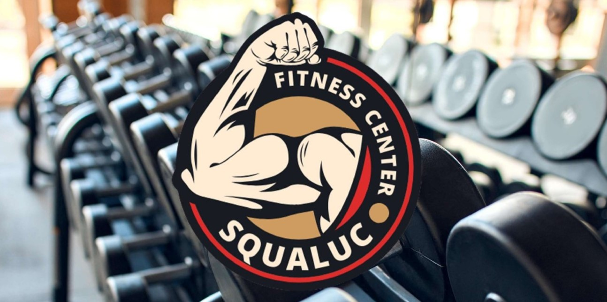
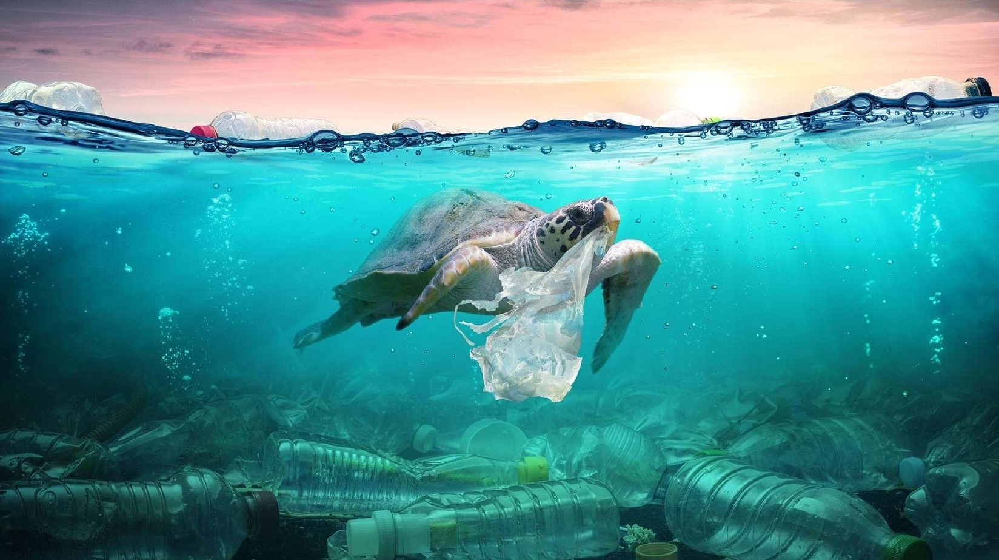
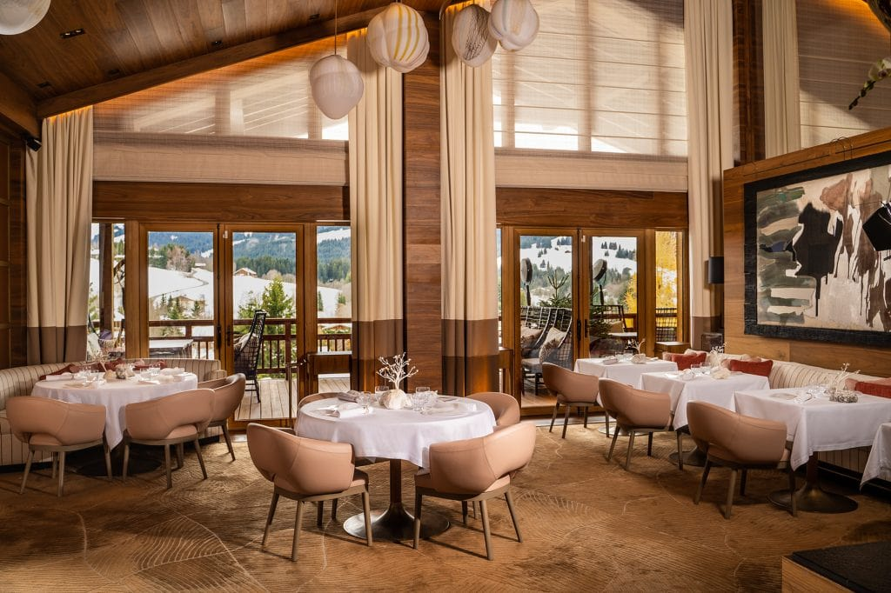

October 2023
Designed and implemented a database management system for a gym utilizing SQL and Excel. Created queries to efficiently manage customer data, track memberships, analyze class subscriptions, monitor inventory
and assess financial performance. These efforts enabled data-driven decision-making and optimized gym operations.


As part of a project scenario focusing on raising awareness about plastic usage, we devised an editorial plan for 'plastic use awareness week' on Instagram.
Our aim was to engage the audience with data-driven insights and visuals on plastic consumption, its environmental impacts, and recycling benefits.
Utilizing tools like Flourish, Dat Wrapper for chart creation, and Canva for post design, we crafted a series of posts aimed at educating the audience about sustainable practices.

In collaboration with a team, during a Bchelor Eramsus in Sweden, I conducted a qualitative analysis focusing on communication within knowledge-intensive organizations, particularly managers' perspectives.
Interviewing four managers from Nordea, a financial company, we identified key themes such as transparency, relationship-building, and employee engagement.
This project deepened my understanding of organizational communication dynamics and honed my qualitative research and data analysis skills.

This analysis delves deep into Bologna's restaurant market, utilizing data from the Orbis website and statistical techniques in STATA to unveil key insights.
This analysis delves deep into Bologna's restaurant market, utilizing data from the Orbis website and statistical techniques in STATA to unveil key insights.